<title>Scrapkeep Landmark Storyboards</title>
<meta name="claude:viewport-fit-sides" content="cover">
<link rel="preconnect" href="https://fonts.googleapis.com">
<link rel="stylesheet" href="https://fonts.googleapis.com/css2?family=Bangers&family=Bowlby+One+SC&family=Atkinson+Hyperlegible:ital,wght@0,400;0,700;1,400&family=IBM+Plex+Mono:wght@500&display=swap">
<style>
/* Layout: a comic-book issue on desert paper. Each board is a page: intro card, postcard panel,
   gameplay panel, and A/B panels where Andrew has a call to make. One deliberate look, both themes. */
:root {
  --paper: #efe4cc;
  --paper-2: #e4d4b2;
  --ink: #1f1d1b;
  --ink-soft: #4a433b;
  --oxide: #9b513a;
  --copper: #b77843;
  --mint: #2f9e86;
  --ancient: #9dff3c;
  --amber: #e5a044;
  --petrol: #365754;
  --f-display: "Bowlby One SC", "Arial Black", Impact, sans-serif;
  --f-sfx: "Bangers", "Impact", "Arial Black", sans-serif;
  --f-body: "Atkinson Hyperlegible", "Segoe UI", system-ui, sans-serif;
  --f-mono: "IBM Plex Mono", ui-monospace, Menlo, monospace;
  color-scheme: light;
}
* { box-sizing: border-box; }
body {
  background: var(--paper);
  background-image: radial-gradient(rgba(31, 29, 27, .09) 1px, transparent 1.2px);
  background-size: 7px 7px;
  color: var(--ink);
  font: 16px/1.5 var(--f-body);
  padding-left: max(16px, env(safe-area-inset-left, 0px));
  padding-right: max(16px, env(safe-area-inset-right, 0px));
  padding-block: 20px 56px;
}
.wrap { max-width: 1080px; margin: 0 auto; display: grid; gap: 44px; }
h1, h2 { font-family: var(--f-display); font-weight: 400; line-height: 1.02; text-wrap: balance; margin: 0; }
h1 { font-size: clamp(2.1rem, 7vw, 4rem); letter-spacing: .01em; }
h1 small { display: block; font-family: var(--f-sfx); font-size: .42em; letter-spacing: .08em; color: var(--oxide); }
h2 { font-size: clamp(1.5rem, 4.6vw, 2.4rem); }
p { margin: 0; max-width: 66ch; }
.lede { display: grid; gap: 12px; }
.ask {
  border: 3px solid var(--ink); background: var(--ink); color: var(--paper);
  padding: 14px 16px; transform: rotate(-.6deg); box-shadow: 6px 6px 0 var(--oxide);
  display: grid; gap: 6px; max-width: 760px;
}
.ask strong { color: var(--amber); }
.legend { display: flex; flex-wrap: wrap; gap: 8px 18px; font-size: .92rem; color: var(--ink-soft); }
.legend span { display: inline-flex; align-items: center; gap: 6px; }
.sw { width: 14px; height: 14px; border: 2px solid var(--ink); display: inline-block; }

.board { display: grid; gap: 14px; }
.board-head { display: flex; flex-wrap: wrap; align-items: baseline; gap: 6px 14px; }
.no { font-family: var(--f-sfx); font-size: 1.6rem; color: var(--oxide); letter-spacing: .05em; }
.stage { font-family: var(--f-mono); font-size: .8rem; text-transform: uppercase; letter-spacing: .08em; color: var(--ink-soft); }

.grid { display: grid; grid-template-columns: 1.25fr 1fr; gap: 14px; align-items: start; }
@media (max-width: 760px) { .grid { grid-template-columns: 1fr; } }

.card {
  background: var(--paper); border: 3px solid var(--ink); padding: 14px 16px;
  transform: rotate(-1deg); box-shadow: 5px 5px 0 var(--ink); display: grid; gap: 8px; min-width: 0;
}
.card .name { font-family: var(--f-display); font-size: 1.35rem; line-height: 1.05; }
.card dl { display: grid; grid-template-columns: auto 1fr; gap: 2px 12px; margin: 0; font-family: var(--f-mono); font-size: .84rem; }
.card dt { color: var(--ink-soft); text-transform: uppercase; letter-spacing: .06em; }
.card dd { margin: 0; font-variant-numeric: tabular-nums; }
.card .threat { font-style: italic; border-top: 2px solid var(--ink); padding-top: 8px; }

.panel { position: relative; margin: 0; border: 4px solid var(--ink); background: var(--ink); min-width: 0; box-shadow: 5px 5px 0 rgba(31,29,27,.35); }
.panel img { display: block; width: 100%; height: auto; aspect-ratio: 16 / 9; object-fit: cover; }
.panel.tilt-l { transform: rotate(-.7deg); }
.panel.tilt-r { transform: rotate(.6deg); }
.panel figcaption {
  position: absolute; left: 10px; top: 10px; max-width: 70%;
  background: #f6eedb; color: var(--ink); border: 2px solid var(--ink);
  font-size: .82rem; line-height: 1.3; padding: 5px 8px;
}
.panel .view { position: absolute; right: 10px; bottom: 10px; font-family: var(--f-mono); font-size: .7rem; letter-spacing: .06em; text-transform: uppercase; background: var(--ink); color: var(--paper); padding: 3px 6px; }
.sfx {
  position: absolute; font-family: var(--f-sfx); font-size: clamp(1.6rem, 6vw, 3rem); letter-spacing: .04em;
  color: var(--amber); -webkit-text-stroke: 2px var(--ink); paint-order: stroke fill;
  text-shadow: 3px 3px 0 var(--ink); transform: rotate(-8deg); pointer-events: none;
}
.sfx.green { color: var(--ancient); }
.sfx.bone { color: #f6eedb; }

.notes { display: grid; gap: 6px; font-size: .95rem; }
.notes b { font-family: var(--f-mono); font-size: .76rem; text-transform: uppercase; letter-spacing: .08em; color: var(--oxide); }
.notes ul { margin: 0; padding-left: 1.1em; display: grid; gap: 4px; max-width: 66ch; }

.fork { display: grid; gap: 12px; border-top: 3px dashed var(--ink); padding-top: 14px; }
.fork-q { font-family: var(--f-display); font-size: 1.1rem; line-height: 1.15; }
.pair { display: grid; grid-template-columns: 1fr 1fr; gap: 14px; }
@media (max-width: 640px) { .pair { grid-template-columns: 1fr; } }
.opt { display: grid; gap: 8px; min-width: 0; }
.opt-label { display: flex; gap: 8px; align-items: center; flex-wrap: wrap; font-weight: 700; }
.tag { font-family: var(--f-mono); font-size: .7rem; text-transform: uppercase; letter-spacing: .08em; padding: 2px 6px; border: 2px solid var(--ink); }
.tag.rec { background: var(--mint); color: #fff; border-color: var(--ink); }
.opt p { font-size: .92rem; }
.caption-box {
  justify-self: start; background: var(--ink); color: var(--paper); font-size: .88rem;
  padding: 4px 10px; transform: rotate(-.8deg);
}
footer { display: grid; gap: 8px; font-size: .88rem; color: var(--ink-soft); border-top: 3px solid var(--ink); padding-top: 16px; }
footer code { font-family: var(--f-mono); font-size: .82rem; overflow-wrap: anywhere; }
@media (prefers-reduced-motion: reduce) { .panel, .card, .ask, .caption-box, .sfx { transform: none; } }
</style>

<main class="wrap">
  <header class="lede">
    <h1><small>Issue 0 · Storyboards first</small>Seven boards before anything gets modelled</h1>
    <p>Rough Blender blockouts of the six hero landmarks and the camp, rendered with Cycles. They judge silhouette, scale and layout only: no materials, no baked terrain, no dressing. Each landmark gets a postcard (the wide shot a stage opens on) and a gameplay frame from the boss chase camera (arm 12 m, FOV 65). The tiny figure is you: a 1 m ball.</p>
    <div class="ask">
      <p><strong>Decided 16 Oct:</strong> boards approved. Headframe legs solid to the ground. Sinkhole gets the full ring. Isle tip is a moving anchor. Spire keeps the 30 m waist. Camp is a hub ring.</p>
    </div>
    <p><b>What these boards leave out:</b> the run up to the boss. Each board shows the landmark and its boss arena only. The play before the boss lives in each park's route rows (rides, slots, pockets, camps and caches): 136 on the dam, 219 on the flume, 109 in the pit, 496 in the sinkhole, 405 on the isles and 241 at the crown. The landmark builds sit outside those rows, and a test checks that every row stays exactly where it is.</p>
    <div class="legend" aria-label="Colour key">
      <span><i class="sw" style="background:var(--amber)"></i>Amber: a new solid (harpoon bites it, ball hits it)</span>
      <span><i class="sw" style="background:var(--ancient)"></i>Green column: the ancient beam</span>
      <span><i class="sw" style="background:#8bf0d3"></i>Mint ribbon: the Mind's flight lane</span>
    </div>
  </header>

  <!-- 1 DAM -->
  <section class="board" id="dam">
    <div class="board-head"><span class="no">#1</span><h2>The Spillway Dam</h2><span class="stage">Stage 1 · park_dam · Reactor Warden</span></div>
    <div class="grid">
      <figure class="panel tilt-l">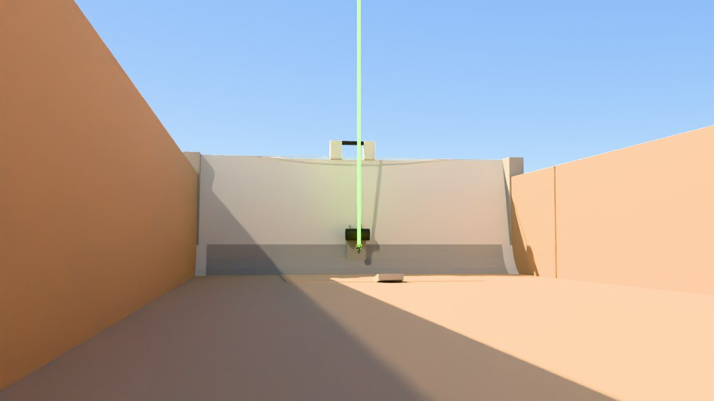<figcaption>Meanwhile, a lake was being held back.</figcaption><span class="view">Postcard</span></figure>
      <div class="card"><div class="name">THE SPILLWAY DAM</div>
        <dl><dt>Chord</dt><dd>320 m, bowed 25 m upstream</dd><dt>Crest</dt><dd>121 m above the apron</dd><dt>Gates</dt><dd>Two. Opens on every pulse.</dd></dl>
        <p class="threat">"Has held the reservoir for ninety years. Would like a raise."</p></div>
    </div>
    <div class="grid">
      <figure class="panel tilt-r">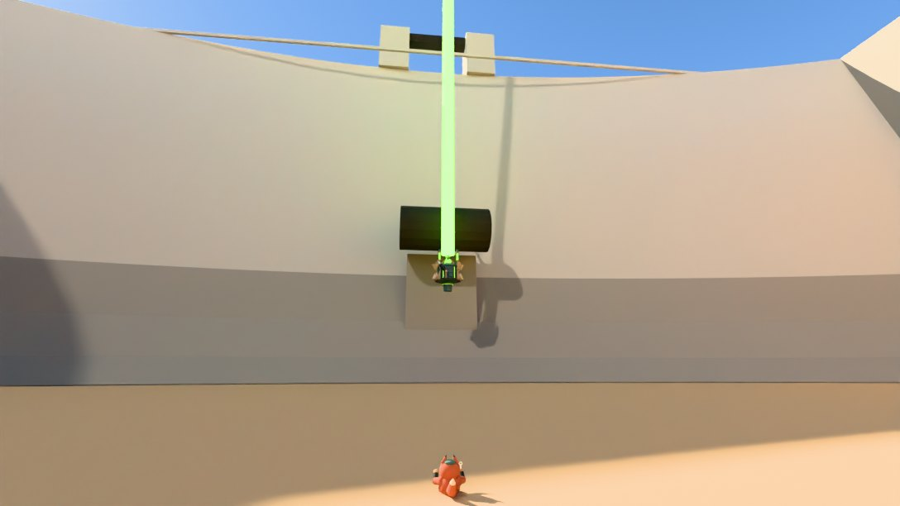<span class="sfx bone" style="right:6%;top:18%">KLANG</span><figcaption>The bottom 30 m is the quarter pipe you ride.</figcaption><span class="view">Gameplay · boss camera</span></figure>
      <div class="notes"><b>Judge</b><ul>
        <li>The arch and the two tower notches are the drop-in read from 1.3 km.</li>
        <li>The Warden sits in a recessed cradle on the face, 22 m up, with the gates swinging above it.</li>
        <li>No fork: the wall is out of reach, so the fight does not change.</li></ul></div>
    </div>
  </section>

  <!-- 2 PENSTOCK -->
  <section class="board" id="penstock">
    <div class="board-head"><span class="no">#2</span><h2>The Penstock Tower</h2><span class="stage">Stage 2 · park_flume · Reactor Warden, hung</span></div>
    <div class="grid">
      <figure class="panel tilt-r">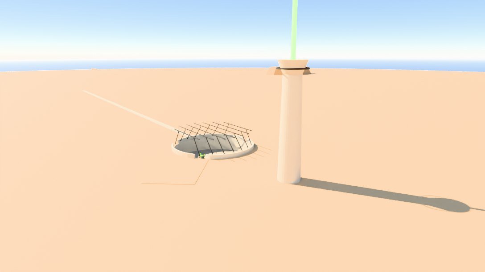<figcaption>The tower is the landmark. The fight is in the drum.</figcaption><span class="view">Postcard</span></figure>
      <div class="card"><div class="name">THE PENSTOCK TOWER</div>
        <dl><dt>Tower</dt><dd>90 m, bell top</dd><dt>Drum</dt><dd>80 m across, 14 m deep</dd><dt>Penstocks</dt><dd>Three, all downhill</dd></dl>
        <p class="threat">"Pressure is a feeling. The tower has all of it."</p></div>
    </div>
    <div class="grid">
      <figure class="panel tilt-l">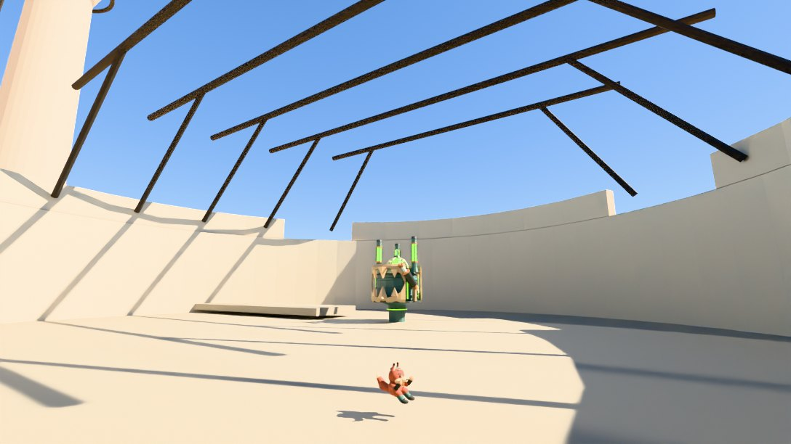<span class="sfx" style="left:44%;top:46%">HSSSS</span><figcaption>Roof trusses stay harpoon posts, not a lid.</figcaption><span class="view">Gameplay · boss camera</span></figure>
      <div class="notes"><b>Judge</b><ul>
        <li>The trusses are open on purpose: sky stays visible and the anchor posts stay the harpoon truth.</li>
        <li>Parapet gaps follow every route that crosses the rim.</li>
        <li>No fork.</li></ul></div>
    </div>
  </section>

  <!-- 3 HEADFRAME -->
  <section class="board" id="headframe">
    <div class="board-head"><span class="no">#3</span><h2>The Headframe</h2><span class="stage">Stage 3 · park_pit · Swarm hive</span></div>
    <div class="grid">
      <figure class="panel tilt-l">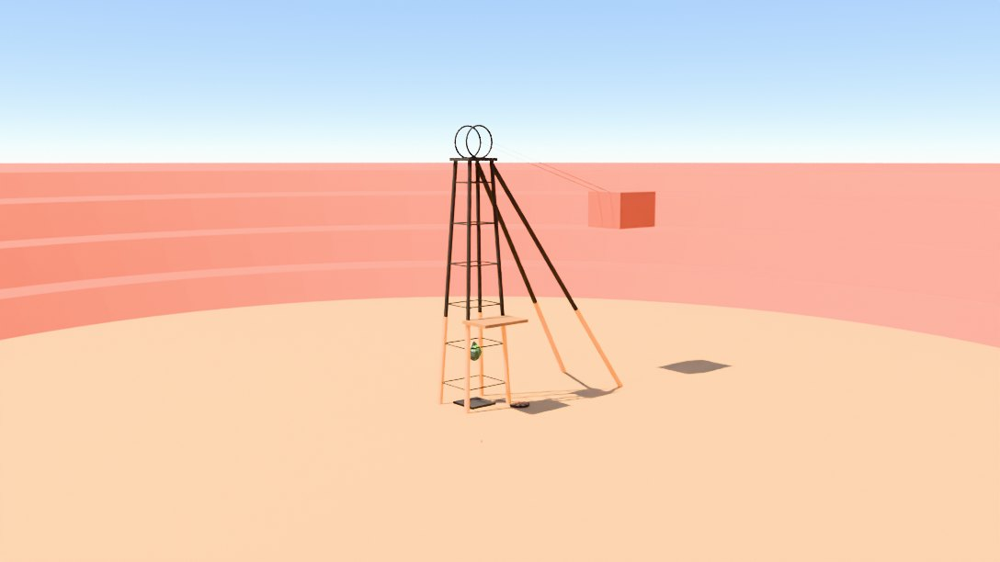<figcaption>No beam here. Noon does the work.</figcaption><span class="view">Postcard</span></figure>
      <div class="card"><div class="name">THE HEADFRAME</div>
        <dl><dt>Height</dt><dd>120 m (20 m over the rim)</dd><dt>Wheels</dt><dd>Two, 14 m</dd><dt>Shift</dt><dd>Never ended</dd></dl>
        <p class="threat">"The hive rides the cage up and down. It has never once taken the stairs."</p></div>
    </div>
    <div class="fork">
      <div class="fork-q">Should the headframe legs below the tipple deck be solid?</div>
      <div class="pair">
        <div class="opt"><figure class="panel tilt-r">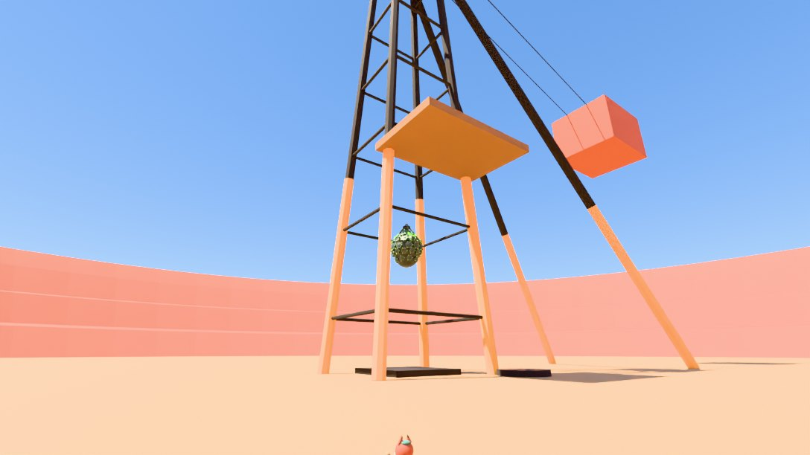<span class="sfx" style="left:8%;bottom:16%">THWIP</span><span class="view">A · solid to the ground</span></figure>
          <div class="opt-label">A. Solid all the way down <span class="tag rec">Recommended</span></div>
          <p>New harpoon posts right beside the hive, so a leg swing onto the tipple deck becomes a line. Costs a re-measure of stage 3's fight bands.</p></div>
        <div class="opt"><figure class="panel tilt-l">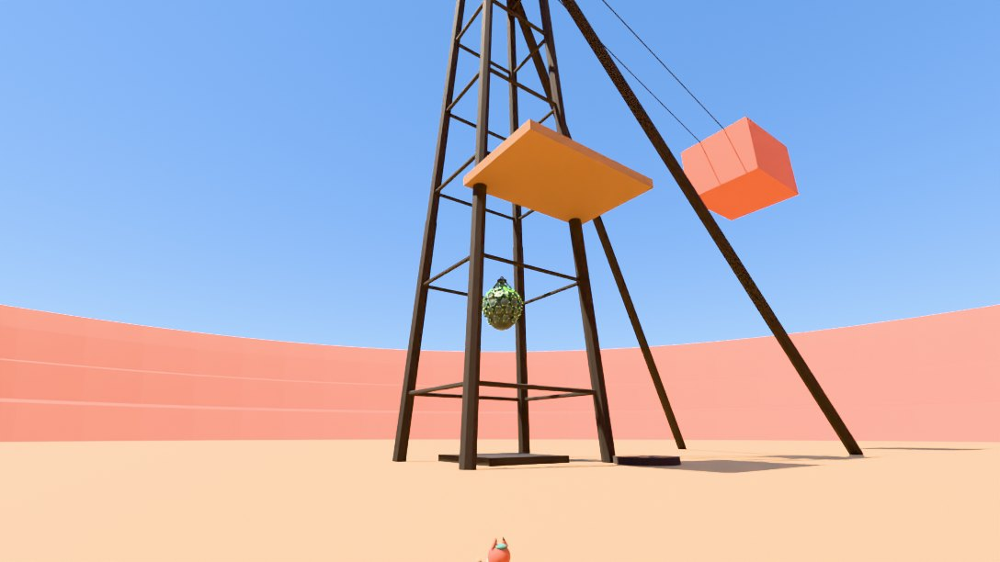<span class="view">B · solid above 40 m</span></figure>
          <div class="opt-label">B. Solid only above the deck</div>
          <p>The fight stays exactly as measured. The legs are scenery where you play.</p></div>
      </div>
    </div>
  </section>

  <!-- 4 SINKHOLE -->
  <section class="board" id="sinkhole">
    <div class="board-head"><span class="no">#4</span><h2>The Sinkhole</h2><span class="stage">Stage 4 · park_sinkhole · Swarm brood</span></div>
    <div class="grid">
      <figure class="panel tilt-r">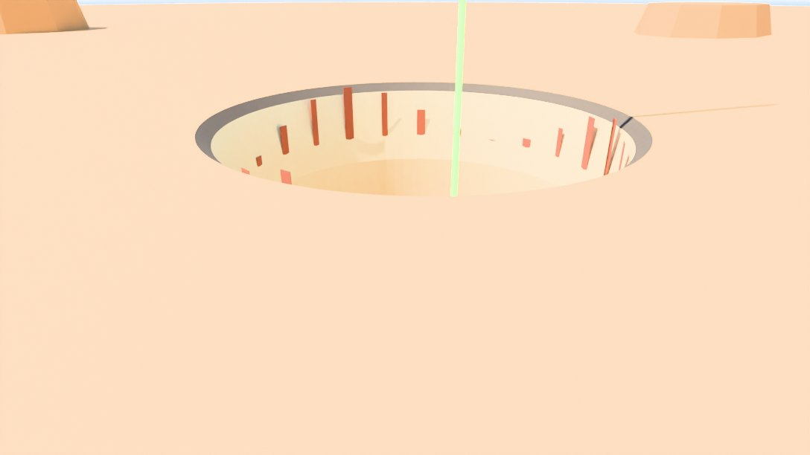<figcaption>From the plateau, the landmark is a light coming out of a hole.</figcaption><span class="view">Postcard</span></figure>
      <div class="card"><div class="name">THE SINKHOLE</div>
        <dl><dt>Across</dt><dd>250 m</dd><dt>Down</dt><dd>110 m to the pool</dd><dt>Pool</dt><dd>40 m radius, rising</dd></dl>
        <p class="threat">"The brood counts everything. It is currently counting you."</p></div>
    </div>
    <div class="fork">
      <div class="fork-q">How much of the gallery ring around the pool survives?</div>
      <div class="pair">
        <div class="opt"><figure class="panel tilt-l">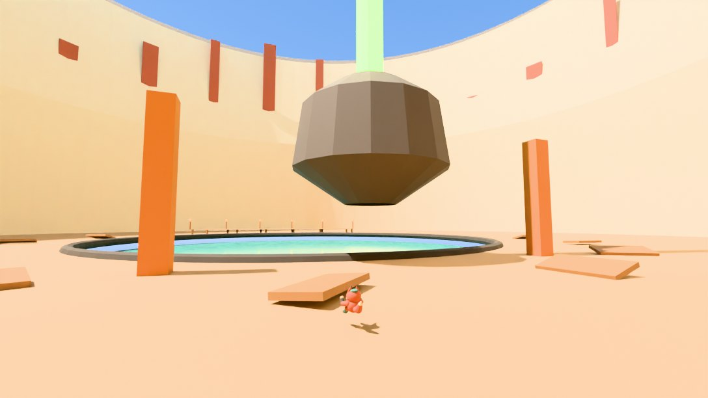<span class="view">A · the shipped arc</span></figure>
          <div class="opt-label">A. One 70 m arc, the rest collapsed <span class="tag rec">Recommended</span></div>
          <p>Dresses the ring that exists today. The broken slabs tell the story, and nothing in the fight moves.</p></div>
        <div class="opt"><figure class="panel tilt-r">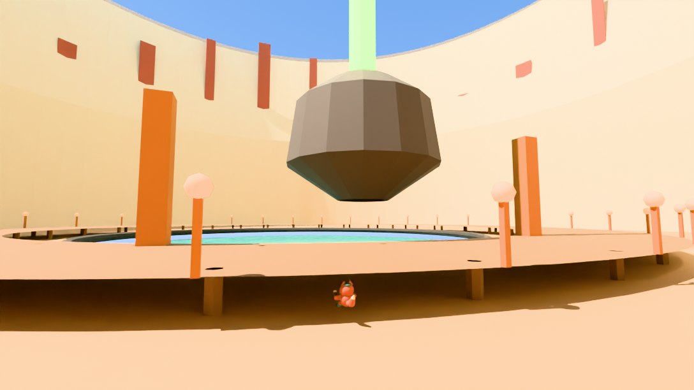<span class="sfx" style="right:8%;top:14%">CREAK</span><span class="view">B · full ring</span></figure>
          <div class="opt-label">B. A full ring all the way round</div>
          <p>Matches the stage page's original idea and gives a lap to ride. It is new floor, so stage 4 gets a greybox change and a re-measure.</p></div>
      </div>
    </div>
  </section>

  <!-- 5 ISLE -->
  <section class="board" id="isle">
    <div class="board-head"><span class="no">#5</span><h2>The Hanging Isle</h2><span class="stage">Stage 5 · park_islands · the Mind's hand</span></div>
    <div class="grid">
      <figure class="panel tilt-l">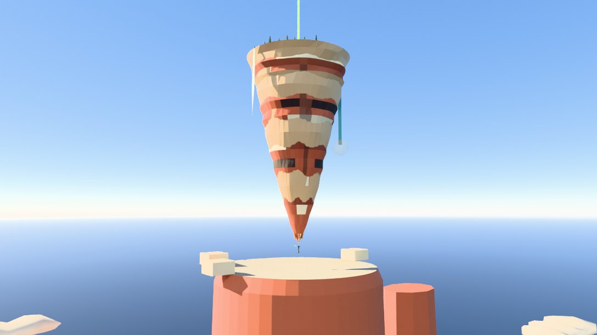<figcaption>The tallest thing in the park, and the only one that floats.</figcaption><span class="view">Postcard</span></figure>
      <div class="card"><div class="name">THE HANGING ISLE</div>
        <dl><dt>Deck</dt><dd>180 m at 400 m up</dd><dt>Tip</dt><dd>38 m over the net</dd><dt>Tilt</dt><dd>10°, when pushed</dd></dl>
        <p class="threat">"Already built. Somebody just never put it in the sky."</p></div>
    </div>
    <div class="fork">
      <div class="fork-q">Can your harpoon bite the isle's tip?</div>
      <div class="pair">
        <div class="opt"><figure class="panel tilt-r">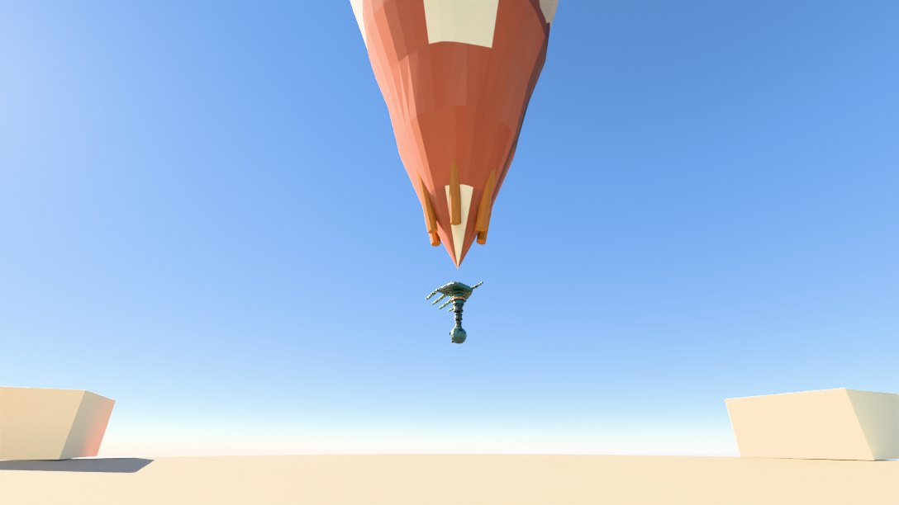<span class="view">A · look only</span></figure>
          <div class="opt-label">A. Look only for the alpha <span class="tag rec">Recommended</span></div>
          <p>The tip tilts and sinks with the fight, but nothing new to grab. Stage 5's measured fight holds. Revisit after the sitting.</p></div>
        <div class="opt"><figure class="panel tilt-l">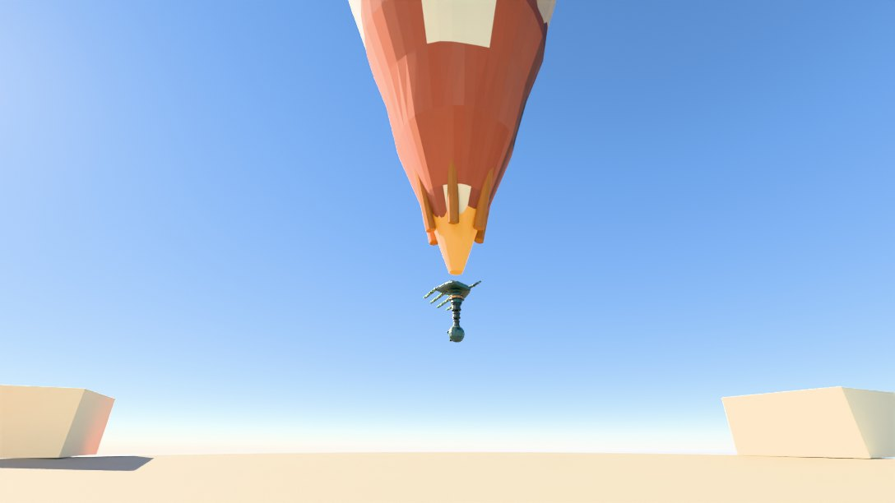<span class="sfx" style="left:56%;top:40%">SHUNK</span><span class="view">B · moving bite</span></figure>
          <div class="opt-label">B. The tip is a moving anchor</div>
          <p>Swing off a tilting mountain. Needs a moving collider and a re-measure, and adds risk to the stage that just got its win.</p></div>
      </div>
    </div>
  </section>

  <!-- 6 SPIRE -->
  <section class="board" id="spire">
    <div class="board-head"><span class="no">#6</span><h2>The Crown Spire</h2><span class="stage">Stage 6 · park_crown · the Mind, final</span></div>
    <div class="grid">
      <figure class="panel tilt-r">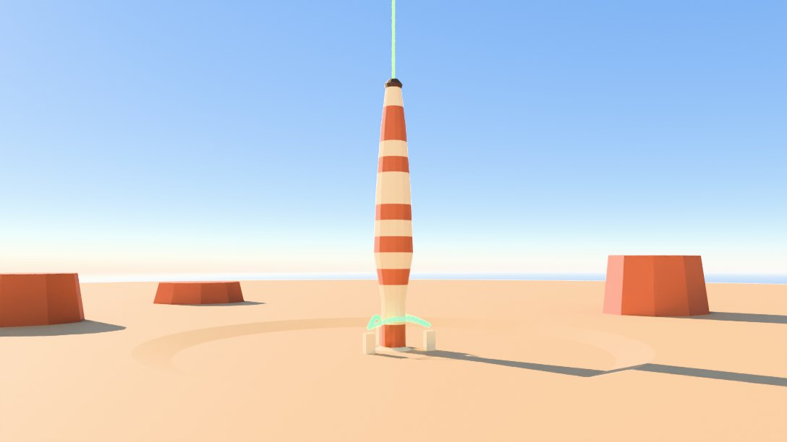<figcaption>The storm prefers it. So does the Mind.</figcaption><span class="view">Postcard</span></figure>
      <div class="card"><div class="name">THE CROWN SPIRE</div>
        <dl><dt>Height</dt><dd>342 m from the bowl</dd><dt>Perches</dt><dd>Three</dd><dt>Lightning</dt><dd>Yes, please</dd></dl>
        <p class="threat">"Stood here before the dam, the mine and the Fleet. Will stand after the sequel."</p></div>
    </div>
    <div class="fork">
      <div class="fork-q">Narrow spire base, or move the perches out?</div>
      <div class="pair">
        <div class="opt"><figure class="panel tilt-l">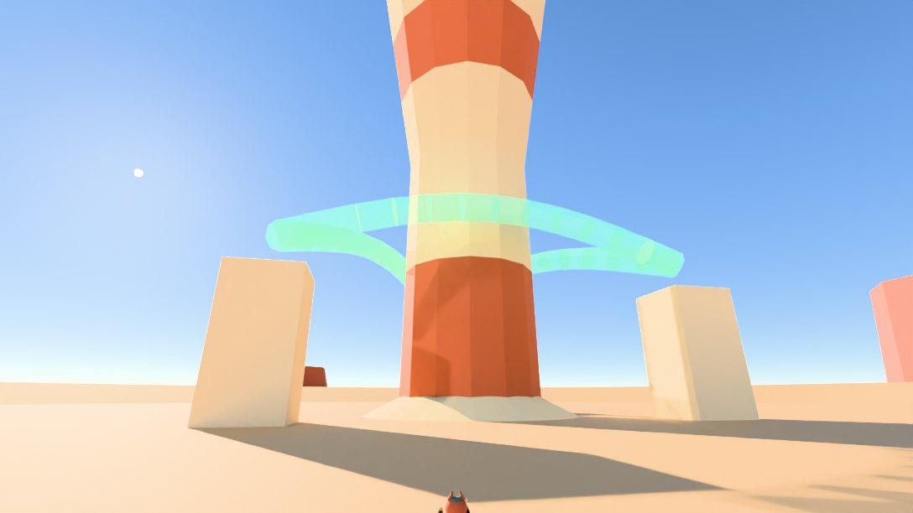<span class="sfx green" style="left:6%;top:12%">FWOOSH</span><span class="view">A · 30 m waist</span></figure>
          <div class="opt-label">A. A 30 m waist up to 60 m <span class="tag rec">Recommended</span></div>
          <p>The spire pinches in where the hand flies, then widens above. The measured fight stays put. One number to change later.</p></div>
        <div class="opt"><figure class="panel tilt-r">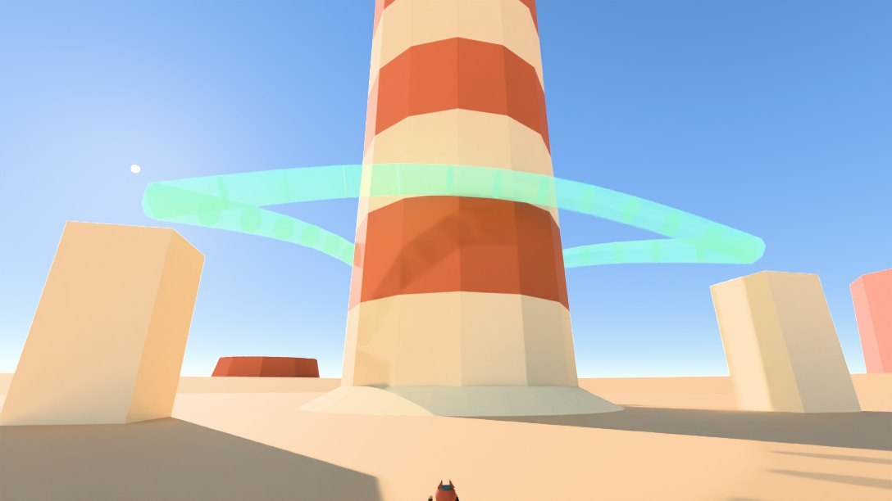<span class="view">B · 50 m base</span></figure>
          <div class="opt-label">B. A full 50 m trunk, perches pushed out</div>
          <p>A heavier, more monumental base. The perch ring moves from 45 m to 62 m, so the final fight is re-tuned.</p></div>
      </div>
      <figure class="panel tilt-l" style="max-width:640px">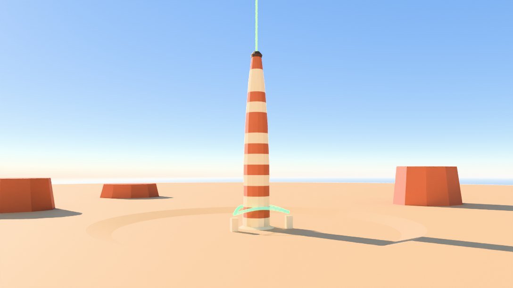<span class="view">B · postcard</span></figure>
      <p class="notes">On a 342 m needle the two bases look almost the same from the postcard. The difference is felt down in the bowl, where the hand flies past it.</p>
    </div>
  </section>

  <!-- 7 CAMP -->
  <section class="board" id="camp">
    <div class="board-head"><span class="no">#7</span><h2>The Camp</h2><span class="stage">Between runs · Moss's bench</span></div>
    <div class="grid">
      <figure class="panel tilt-r">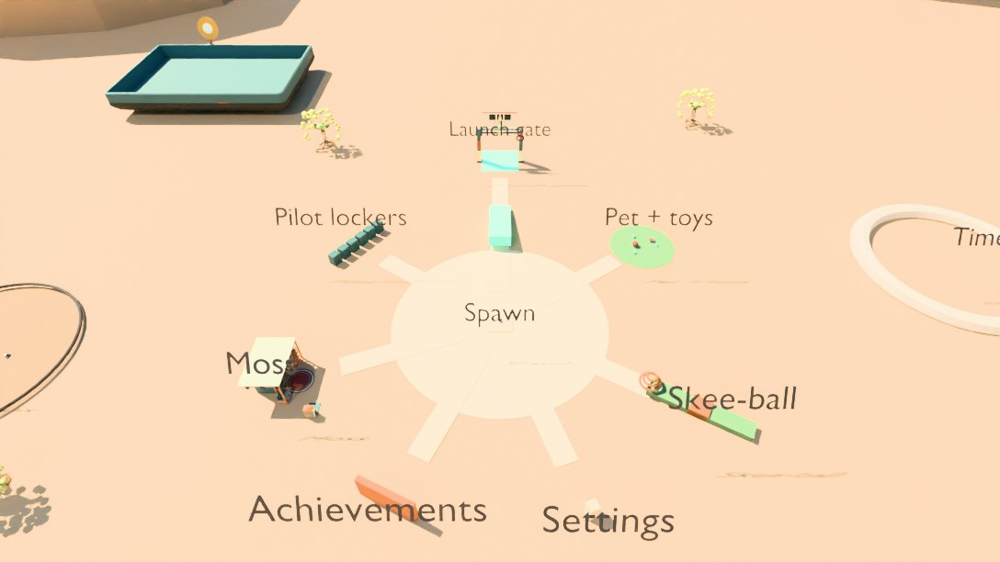<figcaption>Everything within one roll of where you wake up.</figcaption><span class="view">Layout</span></figure>
      <div class="card"><div class="name">THE CAMP</div>
        <dl><dt>Stations</dt><dd>9 (all required)</dd><dt>Gate</dt><dd>70 m, 5 s at cruise</dd><dt>Pet</dt><dd>One. Unpaid.</dd></dl>
        <p class="threat">"Moss packed a spare camp."</p></div>
    </div>
    <div class="fork">
      <div class="fork-q">Lay the camp out as a hub ring or a main street?</div>
      <div class="pair">
        <div class="opt"><figure class="panel tilt-l">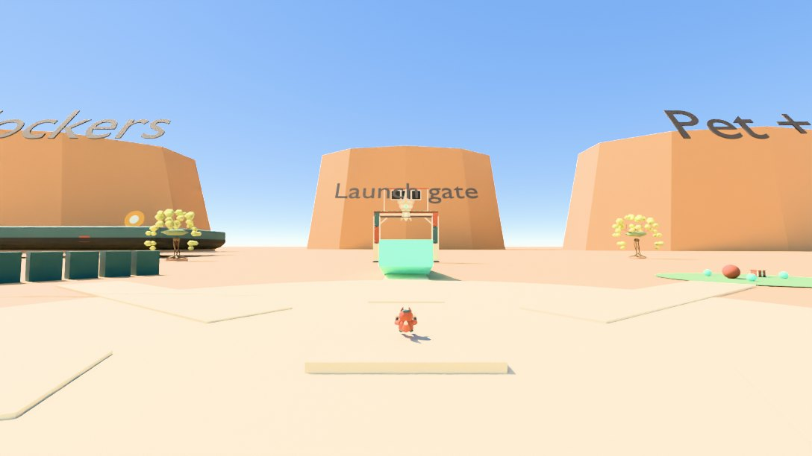<span class="sfx bone" style="left:40%;top:10%">VRRM</span><span class="view">A · from spawn</span></figure>
          <div class="opt-label">A. Hub ring <span class="tag rec">Recommended</span></div>
          <p>You wake in a plaza, the gate is straight ahead at 70 m (5 s at cruise speed), and every station is one short roll off the ring. A mint ramp is the two-second shortcut.</p></div>
        <div class="opt"><figure class="panel tilt-r">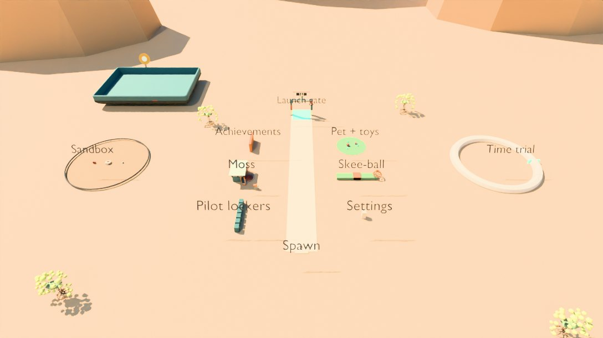<span class="view">B · layout</span></figure>
          <div class="opt-label">B. Main street</div>
          <p>One lane, stations on both sides, like a fairground midway. Reads clearly, but the gate sits at 108 m (about 8 s), so it misses the five-second target without a shortcut.</p></div>
      </div>
    </div>
  </section>

  <p class="caption-box">Next issue: the real models, built to whatever you tapped.</p>

  <footer>
    <p>Rendered 2026-10-16 in a cloud session: Blender 5.2.2, Cycles on CPU, 24 samples, denoised. Shapes and numbers come from the landmark build cards and each stage's park file; the gameplay frames use the chase camera's boss profile. Terrain, sky and dressing are stand-ins, and nothing was run in Godot.</p>
    <p>Source: <code>sketches/core-loop/design-v3/park/storyboards/</code> (<code>blockout.py</code>, <code>render_all.sh</code>), next to <code>design-v3/park/LANDMARK-CARDS.md</code>.</p>
  </footer>
</main>
